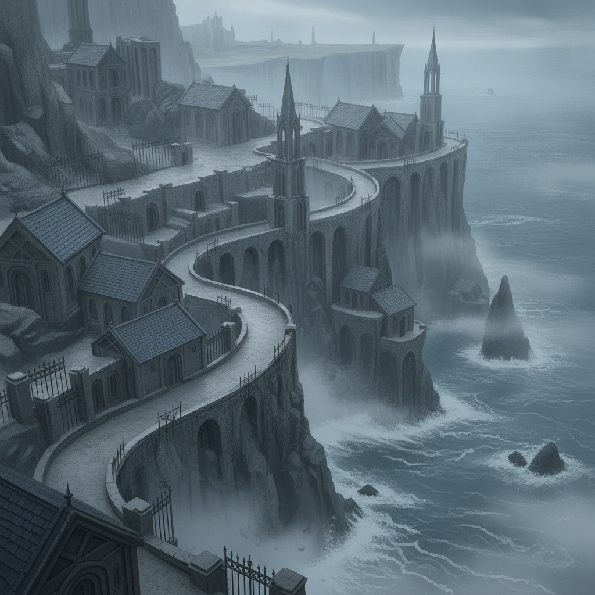
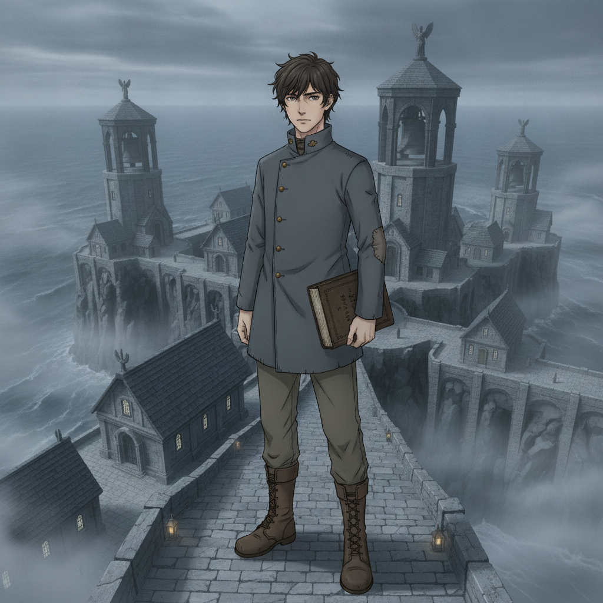
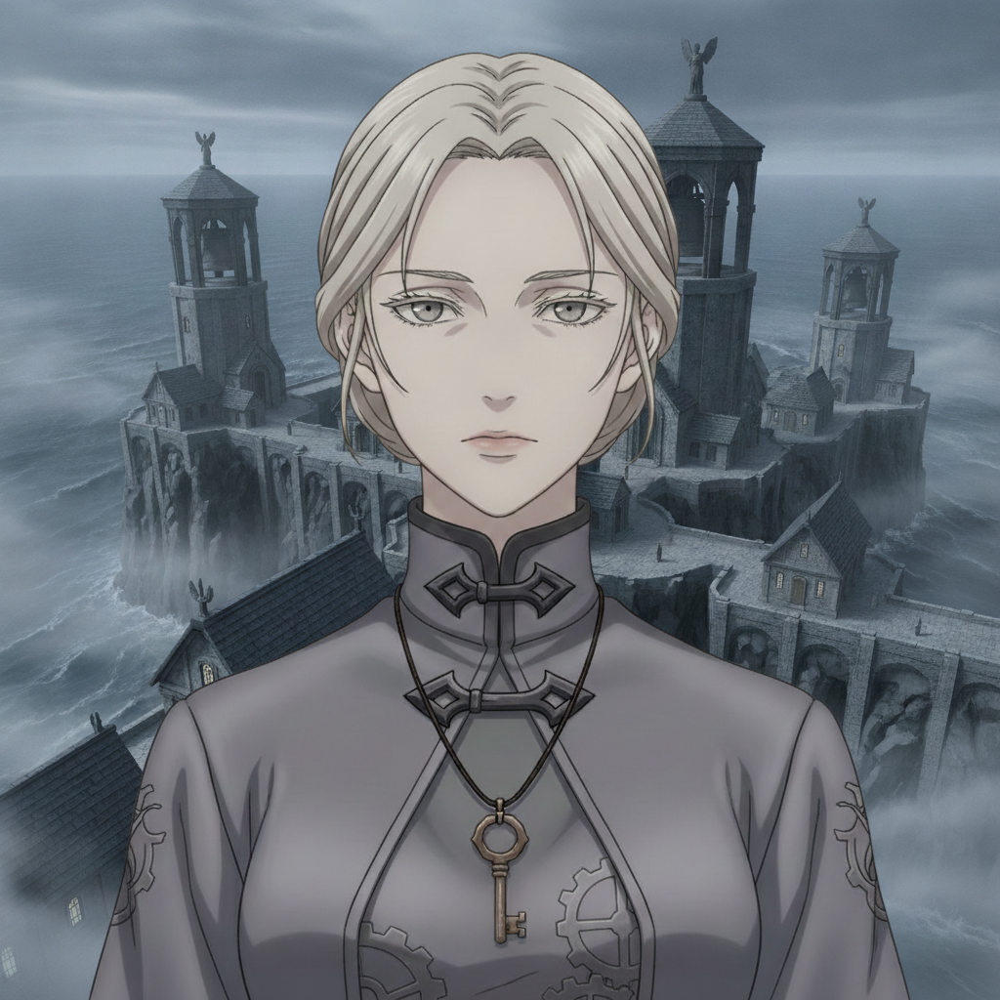

The cold northern principality of Vorn is transformed, not by a softening of its iron will, but by a new, chosen purpose. Today, the grey stone devotional houses bear witness to our wedding.
Isolde stands beside me. She has unclasped her armor, both literal and metaphorical, choosing her own thread, not the one spun for her by a rigid doctrine.

Caedon Vale“You chose this, Isolde. Your own truth.”

Isolde Vorn“And in choosing, I found a faith I can truly uphold. With you, Caedon. Forever.”
Among the people she has liberated from corruption, we exchange our vows. A new path for Vorn, built on doubt turned to conviction. The end.